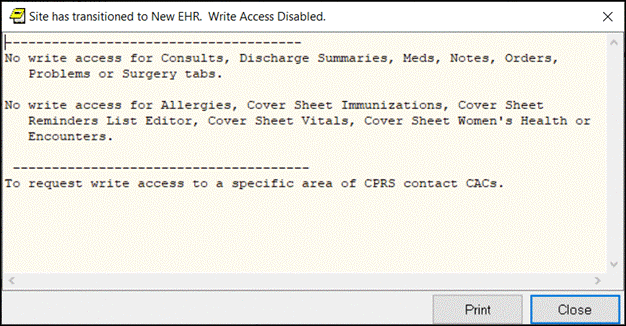
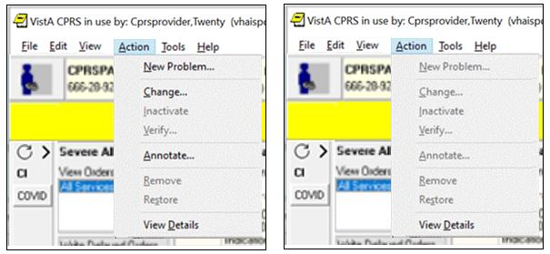
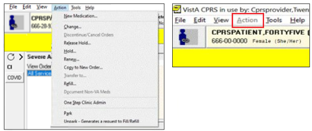
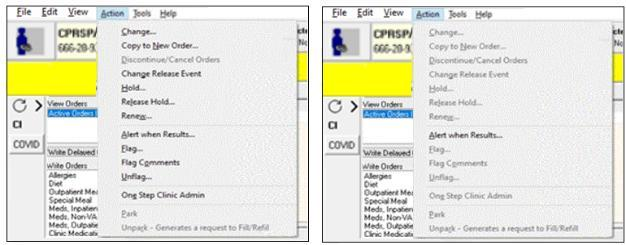
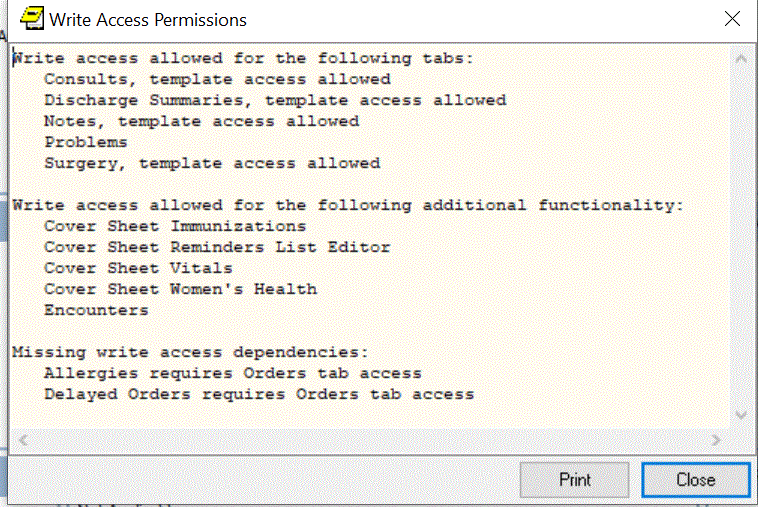

CPRS Write Access functionality enables an authorized VistA user to permit or restrict write access for each CPRS tab (Problems, Meds, Orders, Notes, Consults, Surgery and Discharge Summary), and for specific functionality within each tab (for example, Cover Sheet, Vitals, Encounters and specific Ordering Display Groups). The VistA user can permit or restrict write access at the System, Division or User level.
Write Access functionality eases the transition from CPRS VistA to the new Electronic Health Record (EHR) system. It ensures continuity of patient care and optimizes validation of data displayed in the new EHR.
Write Access functionality exists because sites transitioning to the new EHR must limit unauthorized write access in CPRS and VistA. However, sites not moving immediately to the new EHR can still restrict Write Access to specific areas of CPRS for individual users or divisions. There is no impact to downstream systems or other applications.
Note: If the Write Access settings have changed in VistA, the CPRS GUI must be restarted before those updates will take effect.
Note: Instructions on how to change the CPRS Write Access settings are in the CPRS List Manager Technical Manual. .
To view the Write Access Permissions, follow these steps:
The Write Access Permissions screen lists the tabs and additional functionality where write access is allowed. If there is a 'Missing write access dependencies' screen, it lists write access permission that has been requested in VistA, but has not been granted because one or more dependencies are missing. For example, setting Delayed Orders write access to Yes is only valid when the user has write access to the Orders tab.

Example of the screen that displays after you click the New EHR banner
Listed below are examples of the differences between Write Access Allowed and Write Access Restricted for several tabs.
When the Problem Tab permission is set to Yes in VistA, the New Problem action is enabled and the user can edit, inactivate, remove, annotate, or restore a Problem in CPRS. When the Problem Tab permission is set to No in VistA, the New Problem action is disabled and the user cannot edit, inactivate, remove, annotate, or restore a Problem in CPRS.

Example of the Problem Tab Permissions
(On the Left screen, Problem Tab = Yes, On the Right, Problem Tab = No)
When the Meds Tab permission is set to Yes, the user can access the functions on the Meds tab. When the Meds Tab permission is set to No, the Action menu option is grayed out/disabled.

Example of the Meds Tab Permissions
(On the Left screen, Meds Tab = Yes, On the Right, Meds Tab = No)
When the Orders Tab permission is set to Yes, the user can create or modify orders. When the Orders Tab permission is set to No, the user can’t create or modify orders.

Example of the Orders Tab Permissions
(On the Left screen, Orders tab = Yes, on the Right, Orders Tab = No)
When Reminder editor permission is set to Yes, the user can perform full functions for the Reminder list. The arrows and the OK and Apply functions are enabled. When Reminder editor permission is set to No, the user can’t add available Reminders to the Reminder list panel on the right side. The arrows and the OK and Apply functions are disabled.

In the following example, write access permission for the Orders Tab was set to Yes, but the Unit Dose Medications write-access was set to No in VistA.


Related topics